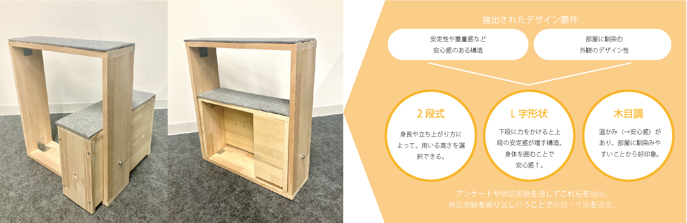

Research
エモーショナルデザイン研究室
橋田 規子 教授
長く愛されるものとは？これからのものづくりの秘訣を解明します！
私たちのまわりには多くのものがあふれていますが、本当に必要なものは何でしょうか？これからの商品は機能を果たすだけでなく、使っている人が気持ち良く使えたり、満足感や愛着を持てることがあらゆるジャンルに必要です。当研究室では「なぜ、人はそれを魅力に感じるのか？」をテーマに、エモーショナル（感性）の要素解明とそれを応用した魅力的なものづくりを工学の知識を取り入れながら研究します。
-
今後のクルマ業界を熱くさせるカーデザインとそのアプローチの探求
杉山 慶 -

床座や座椅子のための立ち上がり手すりの研究
石渡 今日子 -

光超音波3Dイメージング装置搭載の理化学機器のデザイン提案
池田 真利子 -
リビングに馴染むコミュニケーションロボットの外観の研究
芭蕉宮 遥佳 -

工具の扱いを自然に習得できるプラモデル教材の研究
高橋 賢士 -
新幹線先頭車両のデザインと印象についての研究
- 乗ってみたいという気持ちにさせるデザインとは？ -
片居木 大輔 -

鳥の顔の印象分析とその結果を活かしたキャラクターの制作
小林 夕紗 -
空間の色が人の行動に与える影響についての研究
石崎 淑乃 -
趣味として写真撮影を始める高齢者のためのカメラの提案
佐藤 翼 -

店舗を持たずに製品の触感を伝える広告の提案
鈴木 萌奈加 -
光超音波イメージング技術搭載の検査ベッドのデザイン提案
松尾 殊有 -

インドアとアウトドア両方で使えるリモートワーク家具の提案
鈴木 風羽香 -

高齢者が元気になる介護レクリエーションの提案
- 継続して取り組めるための提案 -
伊藤 美空